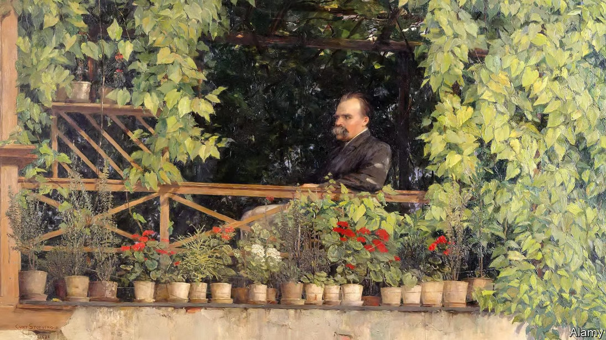
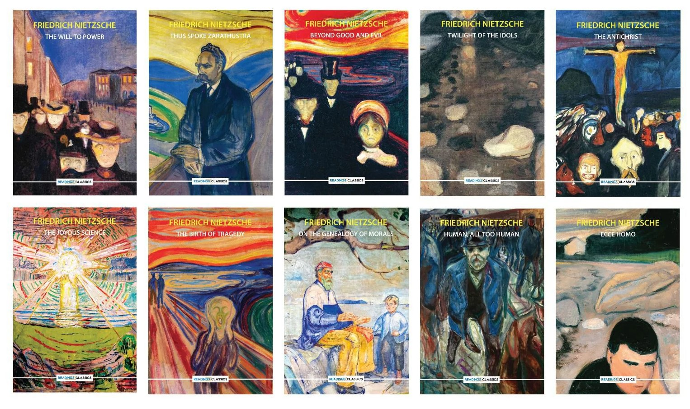
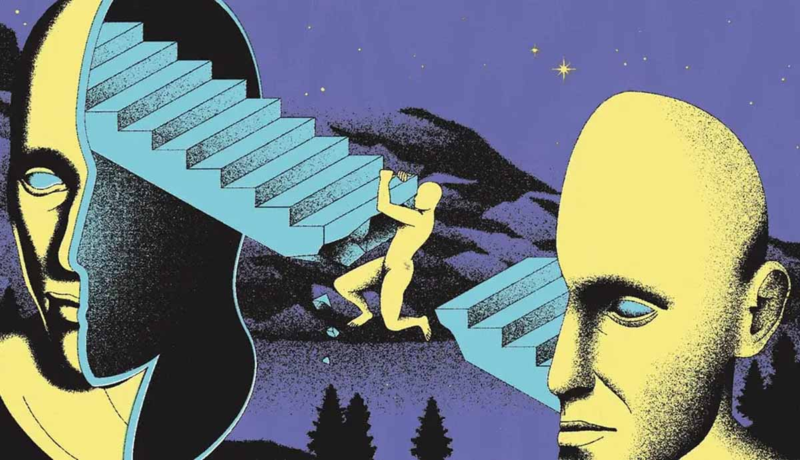

Seorang filsuf Jerman yang karya-karyanya sangat memengaruhi filsafat Barat modern.
Kehidupan

I am Dynamite! A Life of Friedrich Nietzsche. By Sue Prideaux.
Friedrich Nietzsche lahir pada 15 Oktober 1844 di Röcken, sebuah desa kecil di Prusia,
yang saat itu merupakan bagian dari Konfederasi Jerman. Ayahnya,
Carl Ludwig Nietzsche, seorang pendeta Lutheran yang taat,
meninggal dunia ketika Friedrich baru berusia lima tahun,
meninggalkan keluarga kecilnya dalam situasi emosional yang sulit.
Ibunya, Franziska, mengambil peran besar dalam membesarkan Friedrich
bersama saudara perempuannya, Elisabeth. Masa kecilnya diwarnai oleh
lingkungan religius yang kuat, meskipun kelak ia akan menentang keyakinan
ini secara filosofis.
Sejak kecil, Nietzsche menunjukkan kecerdasan luar biasa,
terutama dalam bidang bahasa dan musik. Ia sering menciptakan puisi,
komposisi musik, dan esai, bahkan di usia muda. Setelah menyelesaikan pendidikan dasarnya,
ia melanjutkan studi di sekolah elit di Pforta, tempat yang memperkenalkan dia pada karya-karya besar klasik.
Pendidikan awalnya ini membentuk dasar pemikirannya yang akan
ia eksplorasi lebih dalam pada masa dewasanya.
Karya

Karya selama karirnya dari 1872 - 1889
Nietzsche menulis banyak karya besar yang memberikan dampak besar pada filsafat,
sastra, dan bahkan politik modern. Salah satu karya terkenalnya, Thus Spoke Zarathustra,
adalah ekspresi puitis dari konsep-konsep filosofisnya yang kompleks, termasuk gagasan
"kembalinya yang abadi" dan manusia yang melampaui dirinya sendiri.
Dalam Beyond Good and Evil, Nietzsche menggugat sistem moral tradisional yang ia anggap usang,
menawarkan pendekatan baru yang lebih dinamis dan individualistis terhadap etika.
Sementara itu, dalam The Birth of Tragedy, ia memadukan seni dan filsafat untuk
mengeksplorasi konflik antara prinsip Apollonian (ketertiban) dan Dionysian (kekacauan).
Selain itu, Nietzsche juga menulis karya-karya seperti On the Genealogy of Morality,
yang mendalami asal-usul nilai-nilai moral, dan Ecce Homo, di mana ia secara reflektif
menggambarkan dirinya sendiri sebagai seorang filsuf yang mencoba melampaui batas-batas
pemikiran konvensional. Meski karyanya sering kontroversial, mereka menjadi landasan bagi
diskusi filosofis yang terus berkembang hingga hari ini.
Pengaruh
Ide-ide Nietzsche memiliki dampak yang luar biasa pada filsafat, sastra, dan seni.
Karyanya sering dianggap sebagai dasar bagi banyak aliran pemikiran modern,
termasuk eksistensialisme dan postmodernisme.
Eksistensialisme

By Rosie Lesso, MA Contemporary Art Theory, BA Fine Art
Pemikiran Nietzsche tentang kebebasan individu dan kehendak untuk berkuasa
memiliki pengaruh mendalam pada filsafat eksistensialisme abad ke-20.
Ia menantang manusia untuk memutuskan belenggu tradisi dan agama,
mendorong mereka untuk menjadi pencipta nilai-nilai baru yang sesuai dengan potensi
unik mereka. Konsep "Übermensch" atau manusia unggul, meski sering disalahpahami,
adalah visi Nietzsche tentang individu yang mampu mengatasi moralitas lama dan
membangun makna hidupnya sendiri melalui kreativitas dan keberanian.
Tokoh-tokoh gerakan existensialist
Jean-Paul Sartre dan Albert Camus, dua tokoh besar eksistensialisme,
mengadopsi gagasan Nietzsche ini dalam pandangan mereka tentang absurditas
kehidupan dan pencarian makna. Nietzsche menekankan bahwa keberadaan adalah
peluang untuk menciptakan sesuatu yang baru dan signifikan, terlepas dari ketiadaan
tujuan universal yang telah ditentukan. Pandangan ini menawarkan jalan bagi individu
untuk hidup secara autentik dan penuh tanggung jawab.
Postmodernisme
Kritik tajam Nietzsche terhadap objektivitas, kebenaran absolut,
dan sistem nilai tradisional menjadi fondasi bagi pemikiran postmodernisme.
Ia percaya bahwa semua nilai dan kepercayaan adalah konstruksi budaya yang relatif
dan tidak ada kebenaran tunggal yang mutlak. Pendekatan radikal ini memberikan inspirasi
kepada pemikir seperti Michel Foucault dan Jacques Derrida, yang memperluas kritiknya
terhadap institusi sosial, bahasa, dan epistemologi.
The Worlds Of Italo Calvino By Merve Emre
Foucault, misalnya, menggunakan gagasan Nietzsche tentang genealogi
untuk mengungkap bagaimana kekuasaan dan pengetahuan saling berhubungan
dalam membentuk masyarakat. Sementara itu, Derrida mengembangkan metode
dekonstruksi yang menghancurkan ilusi akan kepastian dan struktur
stabil dalam teks-teks budaya. Dengan demikian, Nietzsche tidak hanya
menjadi pelopor postmodernisme, tetapi juga tetap relevan dalam analisis
kritis terhadap ideologi, politik, dan struktur sosial modern.